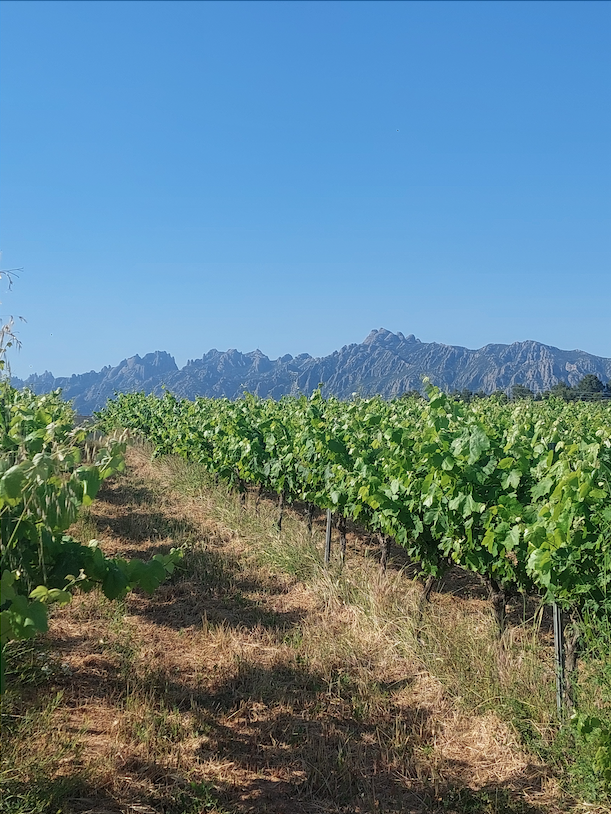

Article
Apunts sobre vi, oli i terra
No és un blog. Són quatre o cinc assaigs llargs.

Què vol dir vi natural?
Un terme que s'utilitza molt i es defineix poc.
Llegir →
El terroir al parc rural de Montserrat
Què aporta la muntanya al nostre vi?
Llegir →
El mètode ancestral, explicat
Per què escollim el pét-nat per al Vi RAS.
Llegir →
Els nostres olivers de cinc-cents anys
La història dels olivers de Palomar de Gatillepes i el projecte d'injert.
Llegir →